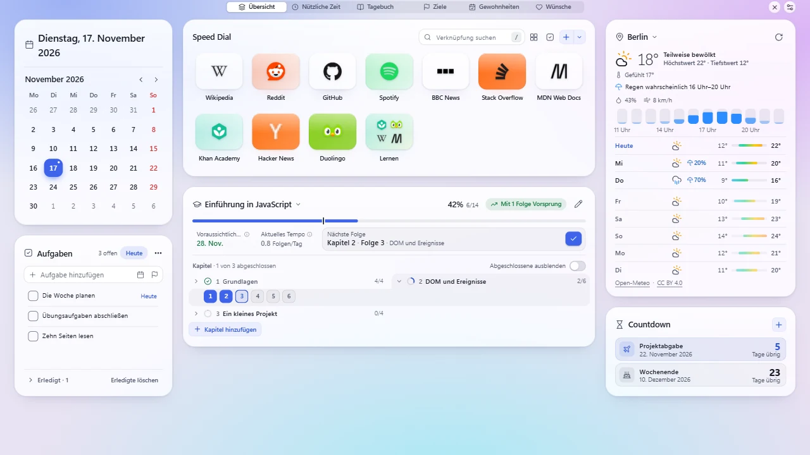
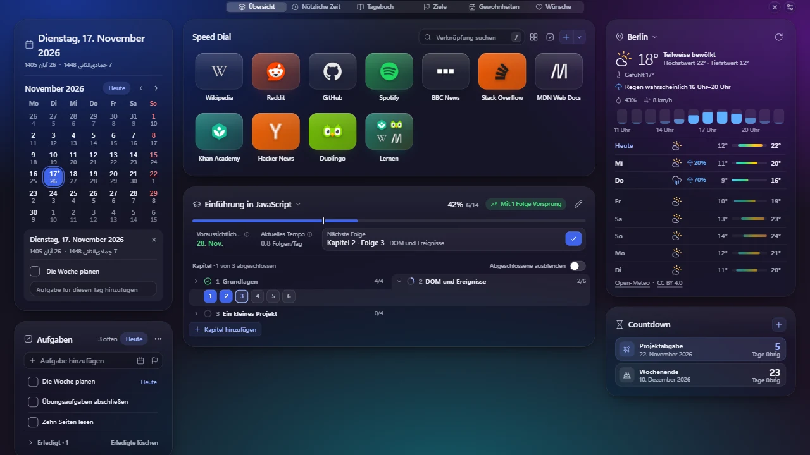

Ein neuer Tab für Chrome mit Aufgaben und Kalender
Mit Tivona sehen Sie beim Öffnen eines Tabs, was heute fällig ist, und erreichen häufig genutzte Websites mit einem Klick. Legen Sie Ihre Arbeitslinks in einem Ordner ab und planen Sie Ihre Aufgaben direkt im Kalender.
Kostenlos für Chrome am Computer. Tivona ersetzt die Seite „Neuer Tab“ und funktioniert ohne Tivona-Konto.

Schnellwahl, Aufgabenliste und Fokus-Timer an einem Ort
Schnellwahl und Lesezeichen-Ordner
Ordnen Sie häufig genutzte Websites in Ordnern und suchen Sie per Tastatur nach einem Link. Einen vorhandenen Ordner können Sie aus den Chrome-Lesezeichen übernehmen.
Aufgaben mit Fälligkeit und Priorität
Ergänzen Sie Ihre Aufgaben um Fristen, Prioritäten, Notizen und einzelne Schritte. Sehen Sie, was heute ansteht oder überfällig ist, und rufen Sie die Aufgaben eines Datums im Kalender auf.
Gregorianischer, persischer und islamischer Kalender
Wechseln Sie im Monatskalender zwischen gregorianischem, persischem (Dschalali) und islamischem Kalender (Hidschri). Sie können mehrere Datumsangaben gemeinsam sehen. Die persische Ansicht zeigt Feiertage im Iran.
Pomodoro-Timer und erfasste Fokuszeit
Stellen Sie Arbeits- und Pausenzeiten ein oder verwenden Sie die Stoppuhr. Starten Sie den Timer aus einer Aufgabe und erfassen Sie die dafür genutzte Zeit.

Passen Sie die angezeigten Widgets an. Zum Beispiel können Sie das Wetter ansehen, einen Countdown anlegen, Gewohnheiten, Ziele und Kursfortschritt verfolgen oder Tagebuch schreiben.
So richten Sie Ihren ersten Tab ein
- Installieren Sie Tivona aus dem Chrome Web Store und öffnen Sie einen neuen Tab.
- Fügen Sie eine häufig besuchte Website zur Schnellwahl hinzu oder geben Sie einer Aufgabe ein Fälligkeitsdatum.
- Wählen Sie in den Einstellungen Sprache, Kalender und die gewünschten Widgets.
Häufige Fragen
Kann ich meine Chrome-Lesezeichen übernehmen?
Wählen Sie in der Schnellwahl den Import aus Chrome-Lesezeichen. Tivona bittet um Zugriff und kopiert den Ordner, den Sie auswählen.
Was passiert, wenn ich schon eine Neuer-Tab-Erweiterung verwende?
Chrome lässt jeweils eine Erweiterung die Seite „Neuer Tab“ steuern. Auf der Erweiterungsseite von Chrome können Sie festlegen, welche Erweiterungen aktiv sind.
Wie übertrage ich Aufgaben auf einen anderen Computer?
Exportieren Sie unter Einstellungen → Daten eine Sicherung und stellen Sie die Datei auf dem anderen Computer in Tivona wieder her. Die Aufgaben sind in der Sicherung enthalten.
Offline-Nutzung und Datenschutz
Kalender, Aufgaben, Tagebuch und Timer funktionieren offline. Zum Öffnen von Websites und zum Abrufen von Wetterdaten oder Online-Symbolen ist eine Internetverbindung nötig.
Aufgaben, Tagebuch und Fokusverlauf bleiben auf diesem Gerät. Einstellungen und Schnellwahl-Links können teilweise über Chrome synchronisiert werden, wenn die Synchronisierung aktiv ist. Für PostHog konfigurierte Versionen bieten eine optionale Freigabe von Nutzungsdaten, die zunächst ausgeschaltet ist. Datenschutzerklärung (Englisch)
Hilfe und Feedback
Nach einem Update können Sie Daten unter Einstellungen → Daten → Automatische Sicherungen wiederherstellen. Schreiben Sie bei Fragen an den Tivona-Support oder öffnen Sie den Support-Bereich im Chrome-Web-Store-Eintrag.